Welcome to my website!

I am 3L33T H4XX0R
C#, C++, GLSL, HTML, TS, SCSS, Bash and Nix
Deep understanding of Linux (I love LVM [Btrfs too!])
Arch Linux / NixOS
KDE Plasma
VSCode
Look, I'm not here to tell a 5 page story but I do think that I should tell a bit more about myself.
I was raised in Hessen, Germany, am 17 years old (as of writing this)
I am what is considered as a "code monkey"
A in computer science
I manage the entire home network all by myself
Before when I was in 7th grade my brother introduced me to python. I hacked together some GUI apps and never touched Python again (he even installed Anaconda for me...)
In 7th grade I had an internship at a software company (whose name I will not tell [privacy reasons]). There I was confronted with Dataflex, the loveliest language.
I had a lot of fun there and learned a very useful skill, debugging (yay!)
An employee there also told me to try out Scratch. I was sceptical at first, but ended up creating a lot of projects (and had a lot of fun of course!)
Then a long period of nothing came.
In 2019 I decided to pick up C#, went to learn Unity to ditch it in 2020.
Unfortunately, in Q2 2020 my father's brother died to cancer.
My father had a lot of unsorted images of his brother on his harddrives so I proposed that I would write a small app which would collect and sort said images (a big project for me at the time).
And thus my first project, FileFinderGit was born!
I learned how to use libraries and rapidly learned C# while rewriting said app.
In Q1 2020 I also fully switched to Linux and ditched Windows (losing some savegames in the process, RIP)
At one point I have gotten so proficient with C# that I decided to try out other languages.
This language was C++
Then came computer science class, which taught me mainly HTML and CSS.
As of now we are learning Java (It's a downgrade compared to C#).
I work on my own little game engine and enjoy playing osu! (and of course watching anime).
To this day I think of the internship and of the people that supported me on my journey. I am extremely grateful for the support I've been recieving from my family and friends (both IRL and online)
May my father's brother rest in piece. I wish his family the best.
Best code ever written
These people better be thankful